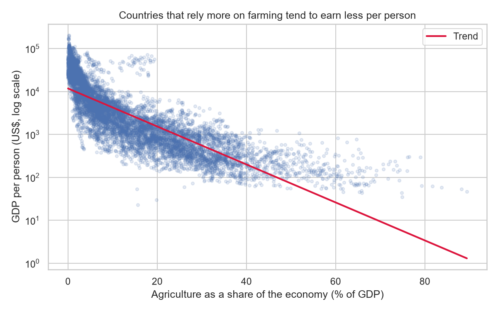

GDP per capita, current US$NY.GDP.PCAP.CD
CRISP-DM · 1 of 6 · Business Understanding
Agriculture and Income
Does a farming economy mean a poorer country?
Do countries with a larger agriculture share of GDP or a greater share of agricultural land tend to have lower GDP per capita?
World Bank country-year data · 1960–2025
PyData Data Science Foundations · Week 5 CapstoneUse ← / → to navigate
CRISP-DM · 2 of 6 · Data Understanding
Three indicators, different parts of the story
Agriculture value added, % of GDPNV.AGR.TOTL.ZS
Agricultural land, % of land areaAG.LND.AGRI.ZS
The World Bank tables are wide (one row per country, one column per year), with gaps in reporting and aggregate rows such as “World.” GDP is in current dollars—not adjusted for inflation or cost-of-living differences.
Source: World Bank, World Development Indicators1960–2025
CRISP-DM · 3 of 6 · Data Preparation
Build comparable country-years
- Reshape each indicator to one row per country and year.
- Exclude non-country aggregates; join on country code and year.
- Keep GDP records in the working table; leave unavailable agriculture values missing.
- Use only complete records when comparing all three measures.
11,764GDP records before final cleaning
11,752working records after zero-value cleaning
8,465complete country-years for three-measure analysis
The complete-case set is smaller because not every country reports every indicator in every year.
Missing values stay missing; they are not treated as zero.212 countries in the working dataset
CRISP-DM · 4 of 6 · Modeling
Compare income on a log scale
Measure the linear association between each agriculture indicator and log GDP per capita.
Compare high- and low-agriculture-share country-years; compare low, medium, and high agricultural-land groups.
Compare the share of records with agriculture above 20% of GDP before 2000 and from 2000 onward.
Why log income? GDP per capita is strongly right-skewed; the log scale reduces the influence of a few very high values.
These are descriptive country-year analyses. The same countries recur over time, so observations are not independent.
Analysis uses the cleaned, complete-case data where required.Methods: correlations · Welch t-test · ANOVA · proportion test
CRISP-DM · 5 of 6 · Evaluation
A strong association; a weaker land-use pattern
−0.816correlation: agriculture share and log income
−0.207correlation: agricultural land and log income
12% vs 88%above-median income: high- vs low-agriculture-share groups
A Welch test also found a large difference in mean log income between the high- and low-agriculture-share groups (t = −104.8, p < 0.001). Agricultural land shows a weaker, less orderly pattern across its groups.
Statistical significance is not causation. Repeated country observations and changing reporting coverage can make simple tests overstate certainty.
Results summarize this dataset—not every country or person.Evaluation
CRISP-DM · 6 of 6 · Deployment & Recommendation
Look beyond the headline
Use agriculture’s GDP share as a descriptive signal of economic structure—not as proof of a cause or a verdict on a country’s future.
For the next analysis, follow countries over time and add context such as education, productivity, trade, institutions, and inflation-adjusted income.

The notebook and app include two additional charts: GDP by agricultural-land group and agriculture share over time.
Explore the live Streamlit app and read the published Substack article from the project README.
Charts: notebook analysis · Data: World Bank WDIThank you